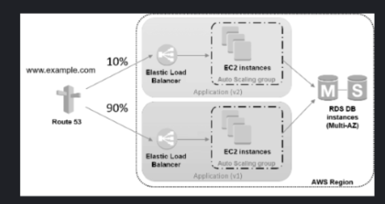

Q5 of 19
The image below is of a deployment type that provides near zero-downtime release and rollback capabilities. It works by shifting traffic between two identical environments that are running different versions of the application. For this it uses a specific routing policy of Route53.

From the following propositions, identify the deployment type and Route53 routing policy used.
Options
1. Canary Deployment & Multivalue Routing
2. Blue-Green Deployment & Latency Routing
3. Blue-Green Deployment & Weighted Routing
4. Rolling Deployment & Weighted Routing
5. Canary Deployment & Weighted Routing
6. Rolling Deployment & Multivalue Routing